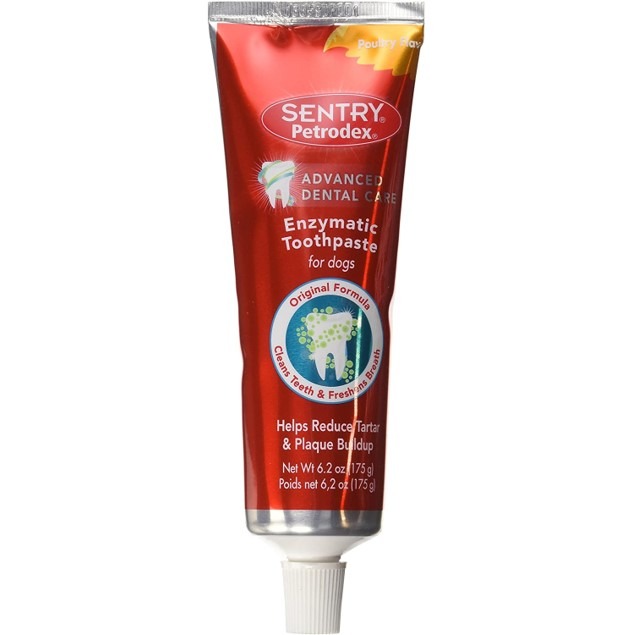

Puppy Year 1 Product Recommendations
-
Double Door Wire Crate

It is strongly recommended that you crate train your puppy. Dogs need to have a space that is designated as their own area where they can go to unwind. This is great for you so you can have a break, too, or when teaching your dog that they are not welcome at the dinner table, or not to jump on guests that knock on the door. You will also be happy that you have a way to limit the amount of destruction your puppy can do when you have to leave him home alone for several hours at a time. Puppies will be nervous about going in to the crate for the first time, so you should take the time to let them get curious and explore over a period of several days before shutting the door for the first time. There are many books as well as resources online to teach you how to crate train step-by-step. Just remember that crates should never be used as a form of punishment. You want your dog to see the crate as a nice place to relax, not a prison.
I love this double door wire crate because it can be positioned in whichever orientation works for your living space. The removable tray at the bottom is great for easy cleaning, and it folds up for easy storage as needed. It also has a removable insert so you can adjust the size as your puppy grows.
Find this double door wire crate at Amazon. -
Portable/Collapsible Travel Crate

I purchased this soft crate to have a light-weight, portable space for Penny to sleep when we travelled. I also decided to keep this crate in my bedroom so Penny did not have to sleep in the living room. People have different opinions about whether dogs should be allowed to sleep in your bedroom, so do some research and make your own decision about that topic. I found this sleeping arrangement particularly useful while potty training because I would instantly wake up when Penny started to let me know that she needed outside.
Find this soft portable crate at Amazon. -
6-foot Leather Leash

A good leash is essential if you have a dog. Most trainers recommend starting with a 6-foot leash to use when training your puppy loose-leash walking. I strongly recommend investing in a high quality leather leash, rather than a nylon leash. First, nylon leashes wear out quickly, especially if your puppy likes to bite the leash with their razor-sharp puppy teeth. Leather leashes will get a lot more mileage - the one I bought for Penny as a puppy is still going strong three years later. Second, and most importantly, nylon leashes are difficult to grip and can easily slip through your hands. If your puppy sees a squirrel and has a sudden jolt of energy, a nylon leash may slip through your hands and can cause severe rope burns or friction burns.
Find this 6-foot leather leash in a wide variety of color options at Amazon. -
Custom Engraved Dog Tag

Get your puppy's name and your contact information engraved on a dog tag that they wear around their neck at all times. You may also want to have your puppy's microchip number engraved for quick access. In addition to looking cute, dog tags with up-to-date information could save their life if they get lost. Make sure you also have an up-to-date rabies tag once they are old enough to be vaccinated.
These dogs tags are inexpensive and high quality. They are engraved rather than printed, so the text will never wear off.
Find this engraved dog tag in a variety of shapes, sizes, and styles at Amazon. -
Stainless Steel Food/Water Bowls

Any bowls that you have on hand will be fine for food and water bowls. Just make sure the bowl is not so deep that your puppy cannot easily reach the bottom. You also want to ensure there is always water available to drink. I prefer stainless steel bowls over plastic because they are easy to clean and are less likely to harbor bacteria
I love these bowls because they come with a sturdy clip that attaches to any size wire crate and keeps the bowls firmly in place. This is perfect so you can provide water for your puppy in the crate when left home alone, while making sure that the water stays in the bowl rather than tipping over in the crate. If you continue to use your crate into adulthood and want to ensure that your dog does not have to strain his neck to reach the bowl, the height of the clips can easily be adjusted to grow with your dog.
Find this set of stainless steel bowls with crate clips in multiple sizes at Amazon. -
Slow Feeder Bowl (if needed)

Many dogs will have no trouble eating taking their meals out of a normal bowl. Some pups, especially those who are food-motivated, get so excited at meal time that they scarf their food too quickly. Eating too quickly can cause choking and issues with digestion. One tell-tale sign that your puppy has inhaled her food too quickly is vomiting up the meal (and usually enjoying that same feast for a second time) within an hour of meal time.
If your puppy shows these signs, you should purchase a slow-feeder bowl. These bowls are designed so that the food falls into ridges and requires a bit more effort (and therefore, time) to pick up. Your puppy may even enjoy the extra challenge. I quickly learned that Penny was a candidate for the slow-feeder bowl, and she still uses hers as an adult. Just make sure you clean slow-feeder bowls several times per week, as most of them are plastic and can harbor bacteria that may be harmful to your pup.
Find this slow-feeder bowl in a variety of colors and designs at Amazon. -
Soft Training Treats

You may not have been aware that there are multiple types of dog treats, and what's more, that different types of dog treats have been designed for different scenarios. If you start to research online, you will find that there is an overwhelming variety of treat types from soft, to crunchy, to rawhides and bones. When you start to consider different flavors and dietary considerations such as grain-free or nutritional additives, you could spend all day trying to decide what to do.
Typically, soft treats are recommended for training because they can be cut up into small pieces, and the higher moisture content makes them smell more enticing and taste more delicious to your pup. These high value treats should be reserved exclusively for training sessions, while crunchy bites can be given as a bedtime treat or as a snack. After trial and error, I found that the lamb and salmon Soft Puppy Bites worked for Penny. Try a small bag of several brands and types, and see what works best for you.
Find these soft training treats at any pet store or Amazon. -
Hard Puppy Chews/Rawhides

Like training treats, there are tons of bones, chews, and rawhides to choose from. Puppies may have trouble digesting these treats for several months while their digestive system is still sensitive to change. But once they reach 5-6 months, your pup will love to enjoy a chew treat that lasts several minutes. If you're lucky, your puppy could spend an entire hour with this treat. You will likely enjoy these moments of uninterrupted peace while your pup is focused on this tasty snack rather than gnawing on the furniture. Chews, bones, and rawhides are a choking hazard, so make sure your puppy enjoys their special treat in a place where you can hear and supervise them.
Penny loved these Dingo chews. She enjoyed the small bone shape when she was a baby and the longer sticks when she was almost fully grown. Read the recommendations on the labels to make sure you are getting a chew of the proper size/shape that is safest for your dog to consume based on their size and weight.
Find these hard chews at any pet store or Amazon. -
Fillable Toy

If you are a fan of the several minutes of peace you get from a hard chew, you should definitely invest in 2-3 fillable toys. Kong makes a popular cone-shaped rubber fillable toy that I highly recommend. Fill this up with whatever you want - peanut butter, yogurt, kibble, or any mixture that you can think of. It will keep your pup entertained and focused for several minutes. Pro-tip, fill the Kong and freeze it ahead of time for prolonged entertainment. I still give Penny a Kong with a few spoonfuls of yogurt when I leave for work in the morning. By the time she finishes getting every last lick of yogurt, she has forgotten that I am gone and can settle in for a nice relaxing snooze. (More on how I know this is true at item #15).
Find this fillable toy in several sizes at Amazon. -
Puppy Teething and Tug Toys

You should provide your puppy with plenty of toys to chew on. You may find that they have two or three favorites, but it is best to have a variety of options so they are less likely to get bored and decide to chew on the furniture instead. I purchased this set of toys and brought one or two into the toy rotation at a time. Periodically, take away some toys and replace them with new ones to keep your puppy interested. There are tons of toy options, both online and at pet stores, so buy a variety (ropes, rubber toys, stuffed animals, squeakers, etc.) until you know what your puppy likes.
Find this toy set at any pet store or Amazon. -
Dog Waste Bags and Dispenser

Dog waste disposal is a necessary part of owning a dog. Pretty much any dog waste bag will do, but I find that these from AmazonBasics are great because they do not rip (*this is very important*) and they are not see-through so they are a bit more discrete. They also come with a handy bag dispenser that attaches to your leash so you are always prepared with a bag when out with your dog. Most apartments and dog parks will provide bags for free, but it never hurts to have your own available when you need them.
Find these waste bags at Amazon. -
Enzymatic Odor Eliminator and Stain Cleaner

If you get nothing else from my list, *get this product.* It is magic! It is a bit pricey but completely worth it. You will probably only need a few bottles to get through the potty training phase, and then maybe one or less per year for occasional accidents. I had carpet throughout my entire apartment, and Penny took longer than many puppies to understand the concept of potty outside, not on the carpet. "Why go outside and get chilly paws in the cold winter snow when I could just squat right here?" This enzymatic odor eliminator was key for removing the smell and stains from my carpets. Most importantly, it breaks down the ammonia in urine. Have you ever noticed that your puppy pees in the same spot over and over? That is because they smell the ammonia and think, here's my potty spot! I should go here! This enzymatic odor eliminator breaks down that ammonia so they do not associate past accident spots in the house with their go-to potty spot.
Potty training is dreaded by many new pet owners, but it does not have to be torture if you set up your living space correctly. If you have hard floors (tile, wood, laminate), you are set up for success. If you have mixed floor types, confine your puppy to areas with hard floors when possible because accident clean-up is much easier. If you have carpet throughout your living space like I did, you may have a bit more of a challenge. In either case, equip yourself with this stain eliminator, and accidents will not be such a huge deal.
Find this enzymatic odor eliminator at Amazon. -
Enzymatic Pet Toothpaste
You may be surprised to read that dental care is important for dogs. Just like humans, dogs can develop gum disease and dangerous infections that can become life-threatening if they reach the blood supply and spread throughout the body. These infections can only be resolved by tooth extractions which can be traumatic for your dog and quite expensive for you. It is best to take care of your dog's teeth by brushing 1-2 times per week and getting a professional cleaning once per year.
It is actually not essential to brush your dog's teeth for dental health when they are a puppy, because their puppy teeth will fall out within the first year. However, training your puppy to sit still for a routine teeth cleaning may be most easily accomplished when they are in their most impressionable phase (2-3 months of age). Even still, your puppy may not tolerate a tooth brushing until they have matured and calmed down - at 2.5 years, Penny has only just learned to love it. With the right toothpaste and strategy, many pet owners are able to convince their puppy that brushing their teeth is fun!
It is essential to get a pet toothpaste that is safe to swallow. Toothpaste made for humans will make your dog sick. An enzymatic toothpaste will help break down the plaque, so look for that in whatever product you choose. Penny goes crazy for this chicken flavored toothpaste, and she gets right in her spot when she sees me bring it out.
Find this enzymatic dog toothpaste in multiple flavors at Amazon. -
Car Backseat Protector

Hopefully you will find as much joy as I do in bringing your dog with you to explore the outdoors. Dogs make the best camping and hiking companions, and being with you in nature brings them so much happiness. To protect your car from all of the dirt, grime, and smells that your dog (especially breeds with a long coat) will bring home with them, I recommend buying a removable and washable backseat protector. You will be happy you have it after your dog rolls in a mud puddle. You could train them to stay out of the mud, but why deny them such pure and innocent pleasure?
Find this backseat protector (and many other pet supplies) at chewy.com. -
Pet Camera

Leaving your dog at home can cause pet owners a lot of stress. Are they taking advantage of the temporary lack of supervision to wreak havoc on your home? Are they whining all day from separation anxiety? The last thing we want to do as responsible pet parents is cause our puppy daily anxiety. The best way to find out the answers to these mysteries is to invest in a pet camera that allows you to check on your pup from your phone or computer when she's home alone. Before I purchased the Petcube, I was constantly worried that Penny was pacing back and forth, crying, being tortured by loneliness. What I found the first day that I used the camera was that she was not anxious at all and was happily sleeping in various areas of the house - the couch, my bed, the cool kitchen floor. Knowing this eased my nerves about leaving her home tremendously, and I no longer have to worry throughout my day that she is okay.
There are many more advanced pet cameras on the market that will allow you to dispense treats and play games with your pup. Some even come equipped with a paw-shaped call button that allows your puppy to call you during the day. Since Penny spends her entire day rotating between nap spots, the Petcube has all the functionality that I need with a motion- and/or sound-activated camera, the choice to use night-vision in low light, and a built-in laser pointer toy. This purchase is certainly not something you absolutely need, but it may offer some peace of mind as a new pet parent, and that was worth it for me.
Find this pet camera at Amazon.